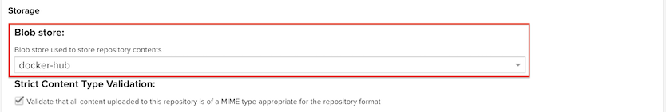

1.4.2 Image Registry로 Nexus Repository 사용하기
컴퓨트 인스턴스에 Nexus 설치
Step 1 - 컴퓨트 인스턴스 생성
-
시스템 요구사항에 맞춰 컴퓨트 인스턴스를 생성합니다. 여기서는 최소사항에 맞춰 설치하겠습니다.
- 요구사항: https://help.sonatype.com/repomanager3/product-information/system-requirements#SystemRequirements-CPU
- OS: Oracle Linux 8
- CPU: 4 OCPU
- Memory: 8 GB
Step 2 – JDK 설치
참조 문서 - https://blogs.oracle.com/developers/post/how-to-install-oracle-java-in-oracle-cloud-infrastructure
-
Nexus Repository Manager의 설치 요구사항에 맞춰 Java 1.8 버전을 설치합니다.
-
Oracle Linux 8 인스턴스상의 Repository에서 설치 가능한 JDK 버전을 확인합니다.
$ yum list jdk* Available Packages jdk-11.x86_64 2000:11.0.17-ga ol8_oci_included ... jdk-17.x86_64 2000:17.0.5-ga ol8_oci_included ... jdk1.8.x86_64 2000:1.8.0_361-fcs ol8_oci_included -
JDK 1.8을 설치합니다.
sudo yum install -y jdk1.8 -
설치 버전 확인
$ java -version java version "1.8.0_361" Java(TM) SE Runtime Environment (build 1.8.0_361-b09) Java HotSpot(TM) 64-Bit Server VM (build 25.361-b09, mixed mode)
Step 3 – Oracle Linux 8에 Sonatype Nexus Repository 설치하기
-
Nexus를 실행할 유저를 생성합니다.
sudo adduser nexus -
최신 버전을 다운로드 받습니다. SELinux로 인한 실행시 오류를 막기 위해 /opt 위치에 설치합니다.
cd /opt sudo wget -O nexus.tar.gz https://download.sonatype.com/nexus/3/latest-unix.tar.gz -
다운로드 받은 파일을 압축해제합니다.
sudo tar -xvf nexus.tar.gz -
폴더명을 변경합니다.
sudo mv nexus-3* nexus3 -
압축 해제된 Nexus 폴더의 소유자와 권한을 변경합니다.
sudo chown -R nexus:nexus /opt/nexus3 sudo chown -R nexus:nexus /opt/sonatype-work -
설정파일에서 실행 유저를 변경합니다.
sudo vi /opt/nexus3/bin/nexus.rc-
다음 내용 변경
run_as_user="nexus"
-
Step 4 – Systemd Service File 생성
서비스로써 인스턴스 재시작시 실행될 수 있도록 관련 파일을 설정합니다.
-
다음 파일을 생성합니다.
sudo vi /etc/systemd/system/nexus.service-
다음 내용 추가
[Unit] Description=nexus service After=network.target [Service] Type=forking LimitNOFILE=65536 ExecStart=/opt/nexus3/bin/nexus start ExecStop=/opt/nexus3/bin/nexus stop User=nexus Restart=on-abort TimeoutSec=600 [Install] WantedBy=multi-user.target
-
-
서비스 활성화
sudo systemctl daemon-reload sudo systemctl enable nexus.service sudo systemctl start nexus.service -
서비스 상태 확인
systemctl status nexus-
정상 시작시 상태 - active (running) 상태
● nexus.service - nexus service Loaded: loaded (/etc/systemd/system/nexus.service; enabled; vendor preset: disabled) Active: active (running) since Mon 2023-03-13 09:30:22 GMT; 5s ago Process: 12799 ExecStart=/opt/nexus3/bin/nexus start (code=exited, status=0/SUCCESS) Main PID: 13014 (java) Tasks: 55 (limit: 48440) Memory: 903.3M CGroup: /system.slice/nexus.service └─13014 /usr/java/jdk1.8.0_361-amd64/bin/java -server -Dinstall4j.jvmDir=/usr/java/jdk1.8.0_361-amd64 -Dexe4j.moduleName=/opt/nexus3/bin/nexus -XX:+Unl> Mar 13 09:30:22 nexus systemd[1]: Starting nexus service... Mar 13 09:30:22 nexus systemd[1]: Started nexus service.
-
-
로그 확인
tail -f /opt/sonatype-work/nexus3/log/nexus.log-
정상 기동시 - 8081 포트로 서비스 됩니다.
tail -f /opt/sonatype-work/nexus3/log/nexus.log 2023-03-13 09:30:53,941+0000 INFO [jetty-main-1] *SYSTEM org.eclipse.jetty.server.handler.ContextHandler - Started o.e.j.w.WebAppContext@3e0f2b26{Sonatype Nexus,/,file:///opt/nexus3/public/,AVAILABLE} 2023-03-13 09:30:53,975+0000 INFO [jetty-main-1] *SYSTEM org.eclipse.jetty.server.AbstractConnector - Started ServerConnector@3d2ab5e1{HTTP/1.1, (http/1.1)}{0.0.0.0:8081} 2023-03-13 09:30:53,975+0000 INFO [jetty-main-1] *SYSTEM org.eclipse.jetty.server.Server - Started @31643ms 2023-03-13 09:30:53,975+0000 INFO [jetty-main-1] *SYSTEM org.sonatype.nexus.bootstrap.jetty.JettyServer - ------------------------------------------------- Started Sonatype Nexus OSS 3.49.0-02 ------------------------------------------------- 2023-03-13 09:31:52,105+0000 INFO [periodic-4-thread-1] *SYSTEM org.sonatype.nexus.repository.httpclient.internal.HttpClientFacetImpl - Repository status for nuget.org-proxy changed from READY to AVAILABLE - reason n/a for n/a
-
Step 5 - 방화벽에서 서비스 포트 열기
-
컴퓨트 인스턴스에서 OS 상의 방화벽에서 대상 포트를 엽니다.
-
Nexus Repository Manager UI: 8081
-
Image Registry 호스트용: 5000
-
Docker Hub 프락시용: 5001
# OS 방화벽에서 Nexus Repository Manager UI, 8081 포트 개방 sudo firewall-cmd --permanent --add-port=8081/tcp # OS 방화벽에서 호스트용, 프락시용 포트, 5000,5001 포트 개방 sudo firewall-cmd --permanent --add-port=5000/tcp sudo firewall-cmd --permanent --add-port=5001/tcp # 방화벽 변경정보 다시 반영 sudo firewall-cmd --reload
-
-
컴퓨트 인스턴스가 속한 Security List에 관련 포트를 Ingress Rule에 추가합니다.
- 포트는 동일: 8081, 5000, 5001
Step 6 – Nexus Repository Manager 접속 및 Repository 설정
-
Nexus Repository Manager 접속합니다.
- 주소: http://<인스턴스 IP>:8081
-
컴퓨트 인스턴스에 관리자 패스워드를 확인하여 Sign in 합니다.
-
username: admin
-
패스워드: 최초 로그인 후 아래 파일은 자동으로 삭제됩니다.
cat /opt/sonatype-work/nexus3/admin.password
-
-
패스워드를 변경합니다.
-
익명으로 접근에 대한 권한을 설정합니다.
-
설정을 완료합니다.
-
이미지가 저장될 Blob Store를 만듭니다.
-
docker-hosted: File 타입으로 만듭니다.
-
docker-hub도 같은 방법으로 만듭니다.
-
필요에 따라 컴퓨트 인스턴스에 Block Volume을 마운트해서 해당 경로로 지정하는 방법도 있습니다.
-
-
docker-hosted Repository를 만듭니다.
-
Repositories > Create Repository 클릭합니다.
-
Recipe에서 docker (hosted)를 선택
-
아래 정보를 입력하여 생성합니다.
- Name: docker-hosted
- HTTP: 포트 5000 번
- Allow anonymous docker pull: 체크 - 로그인 없이 docker pull 할 수 있는지, 즉 Public Repository 인지 설정하는 부분
- Blob store: 앞서 만든 docker-hosted 선택
-
-
docker-hub Repository를 만듭니다.
-
Repositories > Create Repository 클릭합니다.
-
Recipe에서 docker (proxy)를 선택
- 다른 Registry(예, Docker Hub)의 이미지를 캐쉬로 저장하는 유형입니다.
-
아래 정보를 입력하여 생성합니다.
- Name: docker-hub
- HTTP: 포트 5001 번
- Allow anonymous docker pull: 체크 - 로그인 없이 docker pull 할 수 있는지, 즉 Public Repository 인지 설정하는 부분
- Remote storage: Docker Hub의 주소인 https://registry-1.docker.io 입력
- Docker Index: Use Docker Hub 선택
- Blob store: 앞서 만든 docker-hosted 선택

- 나머지는 기본값 사용
-
-
Allow anonymous docker pull을 사용하기 위해 Security > Realms에서 Docker Bearer Token Realm을 추가합니다.
-
Docker Bearer Token Realm을 오른쪽 Active 화면으로 이동시킵니다.
-
적용을 위해 Save합니다.
-
-
Allow anonymous docker pull을 사용하기 위해 Acnonymous Access를 활성화합니다.
설치구성한 Nexus Repository을 Image Registry로 사용하기 테스트
Docker 클라이언트로 테스트하기
생성한 Repository를 HTTP로만 서비스를 하도록 설정하였기 때문에, Docker 클라이언트에서 insecure-registries 설정을 해야 연결이 가능합니다. 내부 네트워크에서 사용하는 경우, HTTP로만 하는 경우가 있어, 해당 내용을 기준으로 테스트합니다.
HTTPS로 서비스시는 SSL Certificate 발급 및 등록 작업이 필요합니다. 여기서는 편의상 HTTP로만 사용합니다.
-
Docker 클라이언트를 설치합니다.
-
/etc/docker/daemon.json 파일이 없는 경우 생성하여 아래 내용을 추가합니다.
{ "insecure-registries" : ["10.0.30.250:5000", "10.0.30.250:5001"] } -
서비스 재시작
sudo service docker restart -
docker-hub Repository에서 docker pull 합니다. 현재 docker-hub는 없어도, Docker Hub를 통해 가져오는 것을 볼 수 있습니다.
$ docker pull 10.0.30.250:5001/busybox:latest latest: Pulling from busybox 1487bff95222: Pull complete Digest: sha256:c118f538365369207c12e5794c3cbfb7b042d950af590ae6c287ede74f29b7d4 Status: Downloaded newer image for 10.0.30.250:5001/busybox:latest 10.0.30.250:5001/busybox:latest -
Nexus Repository Manager 접속하여 Browse에서 docker-hub를 클릭합니다. Docker Hub에서 가져와서 캐쉬된 것을 볼 수 있습니다.
-
docker-hosted Repository에 로그인합니다.
$ docker login 10.0.30.250:5000 Username: admin Password: WARNING! Your password will be stored unencrypted in /home/opc/.docker/config.json. Configure a credential helper to remove this warning. See https://docs.docker.com/engine/reference/commandline/login/#credentials-store Login Succeeded -
docker pull 해서 docker-hosted Repository에 push 하기
-
docker pull
$ docker pull nginx:latest latest: Pulling from library/nginx Digest: sha256:aa0afebbb3cfa473099a62c4b32e9b3fb73ed23f2a75a65ce1d4b4f55a5c2ef2 Status: Downloaded newer image for nginx:latest docker.io/library/nginx:latest -
tag 하기
$ docker tag nginx:latest 10.0.30.250:5000/nginx:latest -
docker-hosted Repository에 push
$ docker push 10.0.30.250:5000/nginx:latest The push refers to repository [10.0.30.250:5000/nginx] 101af4ba983b: Pushed d8466e142d87: Pushed 83ba6d8ffb8c: Pushed e161c82b34d2: Pushed 4dc5cd799a08: Pushed 650abce4b096: Pushed latest: digest: sha256:942ae2dfd73088b54d7151a3c3fd5af038a51c50029bfcfd21f1e650d9579967 size: 1570
-
-
Nexus Repository Manager 접속하여 Browse에서 docker-hosted를 클릭합니다. Docker 클라이언트로 push한 이미지가 등록된 것을 확인할 수 있습니다.
OKE 클러스터에서 Nexus에서 이미지 가져오기
OKE는 쿠버네티스 버전 1.20.8 부터 Docker 대신 CRI-O를 컨테이너 런타임으로 사용하고 있습니다. HTTP로 컨테이너 이미지를 가져오기 위해서는 Docker Client에서 설정한 insecure-registries에 대응되는 추가 설정이 필요합니다.
-
Worker Node에 SSH로 접속하여 Nexus에서 이미지를 잘 가져오는 지 확인해 봅니다.
[opc@oke-cdajpvfkfoq-nkm2nn3kbfa-sb34tztom5a-0 ~]$ sudo crictl pull 10.0.30.250:5000/nginx:latest E0314 02:07:35.127303 35031 remote_image.go:238] "PullImage from image service failed" err="rpc error: code = Unknown desc = pinging container registry 10.0.30.250:5000: Get \"https://10.0.30.250:5000/v2/\": http: server gave HTTP response to HTTPS client" image="10.0.30.250:5000/nginx:latest" FATA[0000] pulling image: rpc error: code = Unknown desc = pinging container registry 10.0.30.250:5000: Get "https://10.0.30.250:5000/v2/": http: server gave HTTP response to HTTPS client- HTTP를 사용하는 경우 오류가 발생합니다.
-
/etc/containers/registries.conf.d 폴더 하위에 레지스트리관련 추가 파일을 생성합니다.
- 예, /etc/containers/registries.conf.d/my-private-registry.conf
- Nexus 컴퓨트 인스턴스의 Private IP을 사용한 예시입니다.
insecure = true로 설정합니다. - Nexus 컴퓨트 인스턴스가 OKE 클러스터와 같은 VCN인 경우 인스턴스의 Internal FQDN(예, nexus.oketoolssubnet.okecluster1.oraclevcn.com)를 Private IP 대신 사용할 수 있습니다.
[[registry]] location = "10.0.30.250:5000" insecure = true [[registry]] location = "nexus.oketoolssubnet.okecluster1.oraclevcn.com:5000" insecure = true [[registry]] prefix = "docker.io" insecure = false blocked = false location = "docker.io" [[registry.mirror]] location = "nexus.oketoolssubnet.okecluster1.oraclevcn.com:5001" insecure = true -
설정을 반영합니다.
sudo systemctl daemon-reload sudo systemctl restart crio -
Nexus에서 이미지를 잘 가져오는 지 다시 확인해 봅니다.
[opc@oke-cdajpvfkfoq-nkm2nn3kbfa-sb34tztom5a-0 ~]$ sudo crictl pull 10.0.30.250:5000/nginx:latest Image is up to date for 10.0.30.250:5000/nginx@sha256:942ae2dfd73088b54d7151a3c3fd5af038a51c50029bfcfd21f1e650d9579967 [opc@oke-cdajpvfkfoq-nkm2nn3kbfa-sb34tztom5a-0 ~]$ sudo crictl images IMAGE TAG IMAGE ID SIZE 10.0.30.250:5000/nginx latest 904b8cb13b932 146MB ... -
OKE 클러스터에서 실행하면, 위에서 설정한 Worker Node에 Pod가 배포되는 경우 이미지를 가져와 Running 상태가 됩니다.
- 작업한 oke-cdajpvfkfoq-nkm2nn3kbfa-sb34tztom5a-0(10.0.10.38) Worker Node에서 Running 상태이며 나머지 노드에 배포된 Pod는 ErrImagePull 에러가 발생하였습니다.
$ kubectl get nodes -o wide -L hostname NAME STATUS ROLES AGE VERSION INTERNAL-IP EXTERNAL-IP OS-IMAGE KERNEL-VERSION CONTAINER-RUNTIME HOSTNAME 10.0.10.16 Ready node 5m5s v1.24.1 10.0.10.16 <none> Oracle Linux Server 8.6 5.4.17-2136.314.6.2.el8uek.x86_64 cri-o://1.24.1-76.el8 oke-cdajpvfkfoq-nkm2nn3kbfa-sb34tztom5a-2 10.0.10.38 Ready node 60m v1.24.1 10.0.10.38 <none> Oracle Linux Server 8.6 5.4.17-2136.314.6.2.el8uek.x86_64 cri-o://1.24.1-76.el8 oke-cdajpvfkfoq-nkm2nn3kbfa-sb34tztom5a-0 10.0.10.93 Ready node 5m33s v1.24.1 10.0.10.93 <none> Oracle Linux Server 8.6 5.4.17-2136.314.6.2.el8uek.x86_64 cri-o://1.24.1-76.el8 oke-cdajpvfkfoq-nkm2nn3kbfa-sb34tztom5a-1 $ kubectl create deploy nginx --image=10.0.30.250:5000/nginx:latest --replicas=6 deployment.apps/nginx created $ kubectl get pod -o wide NAME READY STATUS RESTARTS AGE IP NODE NOMINATED NODE READINESS GATES nginx-67c575b4fb-8kc6v 1/1 Running 0 10s 10.244.4.151 10.0.10.38 <none> <none> nginx-67c575b4fb-8rjxx 0/1 ErrImagePull 0 10s 10.244.5.5 10.0.10.93 <none> <none> nginx-67c575b4fb-g82k4 0/1 ErrImagePull 0 10s 10.244.5.133 10.0.10.16 <none> <none> nginx-67c575b4fb-q2nr9 0/1 ErrImagePull 0 10s 10.244.5.134 10.0.10.16 <none> <none> nginx-67c575b4fb-qt5h5 0/1 ErrImagePull 0 10s 10.244.5.4 10.0.10.93 <none> <none> nginx-67c575b4fb-zm5n6 0/1 ErrImagePull 0 10s 10.244.5.135 10.0.10.16 <none> <none>- 에러 없이 실행하기 위해서는 모든 Worker Node에 동일한 작업이 필요합니다.
-
생성되는 Worker Node에 자동으로 적용하기 위해서는 Custom Cloud-init Initialization Script을 활용하여, Worker Node 인스턴스 생성시 관련 스크립트가 자동으로 실행되게 설정하면 됩니다.
- Node Pool 생성 또는 수정시 고급 옵션에 Initialization script 항목이 있습니다.
- Custom Cloud Init Script Template을 다운로드 받아 OKE가 실행하는 oke-init.sh 다음에 실행할 커스텀 스크립트를 그림과 같이 추가합니다.
- 적용후 신규 생성되는 Worker Node에 적용이 되므로 기존 노드가 있는 경우 삭제후 재생성합니다.
이 글은 개인으로서, 개인의 시간을 할애하여 작성된 글입니다. 글의 내용에 오류가 있을 수 있으며, 글 속의 의견은 개인적인 의견입니다.